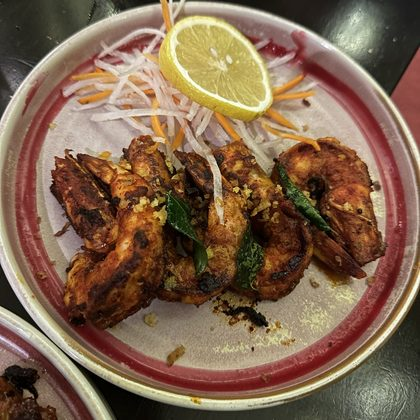

Story modePlay your 2026 Plated10 cards · tap to play1HomeLondon141 meals2Trattoria FicoLondon18 meals3HoshiLondon15 meals4The CrownLondon11 meals  Pasta×27
Pasta×27 Sashimi×22
Sashimi×22 Sunday roast×19
Sunday roast×19
412Meals logged
238Dishes
14Cuisines
96Places
9Cities
5Countries
Meals logged per month
Oct so far40Jan
36Feb
43Mar
47Apr
42May
45Jun
55Jul
44Aug
34Sep
26Oct
Cuisines
14 cuisinesItalian16%Japanese12%British10%Greek9%Portuguese8%Other45%
Italian edged it, Japanese close behind. 9 more cuisines in Other.
Home vs out
34%Home66%Out
By meal
Breakfast58
Lunch131
Dinner187
Sweet36
Busiest day of the week
M
T
W
T
F
S
S
Saturdays are your big food day.
Top places
On the mapMost-loved dishes
times had
Prawns×31Pasta×27Sashimi×22Sunday roast×19